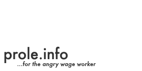
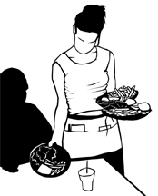

|  | |
|---|---|
INGA JÄVLA RESTAURANGER! översatt av våra vänner på www.polkagris.nu En sextiosidig illustrerad guide till den dagliga misären, stressen, ledan och alienationen som restaurangarbete innebär, liksom till hur en restaurangarbetare bekämpar detta. Baserad på olika antikapitalistiska idéer så väl som personliga erfarenheter är detta både en analys och ett stridsrop. |

DET KAPITALISTISKA SAMHÄLLET En affisch från prole.info och wapiti.se Denna affisch porträtterar klassamhället som det framstå idag utifrån IWW's gamla affisch "Den kapitalistiska pyramiden". En virvelvind av marknadskrafter sätter gränser, formar samhället och tränger igenom vår verksamhet, än i de öppna, än i det fördolda. Människor i de olika nivåerna av det moderna samhällets pyramid kan satsa på sig själv, de kan försvara pyramiden, försöka leva med den, kämpa mot den eller bara supa sig fulla för att glömma pyramiden. |
![[jpeg]](images/pyramid.jpg){kind=link}
Send translations, questions, comments, and corrections to: |